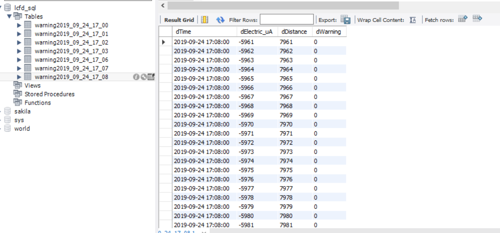

原文出处:本文由博客园博主wangxiaobei2019提供。
原文连接:https://www.cnblogs.com/wangxiaobei2019/p/11576898.html
原文连接:https://www.cnblogs.com/wangxiaobei2019/p/11576898.html
【需求】1. 在数据库中创建表，且能按时间自动创建新表 2. 数据写入数据库 3. 从数据库读取数据
1. 创建表，并自动更新
1 def Creat_Table(InitMySQL,tabel_name):
2 # 创建游标
3 cursor = InitMySQL.cursor()
4 sql = "create table if not exists " + tabel_name + "(dTime datetime not null comment '时间'," \
5 "dElectric_uA int not null comment '电流'," \
6 "dDistance int not null comment '距离'," \
7 "dWarning int not null comment '报警')"
8 # 打印sql
9 print(sql)
10 cursor.execute(sql)
11 # 关闭游标
12 cursor.close()需要输入数据库的连接对象和表名称，sql根据表名称判断数据库中是否存在该表，如果存在则不会创建，不存在则创建新表
tabel_name 可以根据时间创建
2. 向数据库中写入数据
根据创建的数据库中表的类型进行数据填充
1 def Write_to_MySQL(InitMySQL,tabel_name, CurrentTime, Electric_uA, Distance, WaringStatus):
2 # 创建游标
3 cursor = InitMySQL.cursor()
4 # #创建sql
5 # w_table_name = 'warning' + day_time
6 sql = 'insert into '+ tabel_name+ ' values (%s, %s, %s, %s)'
7 print(sql)
8 result = cursor.execute(sql,(CurrentTime, Electric_uA, Distance, WaringStatus))
9 if result == 1:
10 pass
11 # print('添加成功!')
12 else:
13 print('添加数据失败！')
14 # 4. 操作成功提交事务
15 InitMySQL.commit()
16 # 关闭游标
17 cursor.close()整体表的创建与数据输入


1 import time
2 import datetime
3 import json
4 import pymysql
5
6 # JSON 文件初始化
7 def InitJSON():
8 global filejson
9 try:
10 with open('TIE_LDY_20190923_1502.json', 'r') as f:
11 filejson = json.load(f)
12 except FileNotFoundError:
13 print('无法打开指定的文件!')
14 except LookupError:
15 print('指定了未知的编码!')
16 except UnicodeDecodeError:
17 print('读取文件时解码错误!')
18
19 # 数据库参数初始化
20 def MysqlInit():
21 # global LiuCaoSQL
22 # 1. 创建数据库连接对象
23 InitMySQL = pymysql.connect(host=filejson['MysqlInit']['host'], port=filejson['MysqlInit']['port'],
24 database=filejson['MysqlInit']['database'], charset=filejson['MysqlInit']['charset'],
25 user=filejson['MysqlInit']['user'], password=filejson['MysqlInit']['password'])
26 return InitMySQL
27
28 def Creat_Table(InitMySQL,tabel_name):
29 # 创建游标
30 cursor = InitMySQL.cursor()
31 # # 获取当前时间 年-月-日
32 # day_time = datetime.datetime.now().strftime("%Y_%m_%d_%H_%M")
33 # # 拼接table名称
34 # tabel_name = 'warning' + day_time
35 # 创建sql语句 创建列表的表头 注意表的类型create table if not exists tablename
36 sql = "create table if not exists " + tabel_name + "(dTime datetime not null comment '时间'," \
37 "dElectric_uA int not null comment '电流'," \
38 "dDistance int not null comment '距离'," \
39 "dWarning int not null comment '报警')"
40 # 打印sql
41 print(sql)
42 cursor.execute(sql)
43 # 关闭游标
44 cursor.close()
45
46
47 # 向数据库写入内容
48 def Write_to_MySQL(InitMySQL,tabel_name, CurrentTime, Electric_uA, Distance, WaringStatus):
49 # 创建游标
50 cursor = InitMySQL.cursor()
51 # 获取当前时间 年-月-日
52 # day_time = datetime.datetime.now().strftime("%Y_%m_%d_%H_%M")
53 # #创建sql
54 # w_table_name = 'warning' + day_time
55 sql = 'insert into '+ tabel_name+ ' values (%s, %s, %s, %s)'
56 print(sql)
57 result = cursor.execute(sql,(CurrentTime, Electric_uA, Distance, WaringStatus))
58 if result == 1:
59 pass
60 # print('添加成功!')
61 else:
62 print('添加数据失败！')
63 # 4. 操作成功提交事务
64 InitMySQL.commit()
65 # 关闭游标
66 cursor.close()
67 def main():
68 # 初始化JSON 和数据库
69 InitJSON()
70 InitMySQL = MysqlInit()
71 # 测试数据库创建 表
72 # Creat_Table(InitMySQL)
73 # 测试写入数据
74 Electric_uA = 1000
75 Distance = 1000
76 WaringStatus = 0
77 i= 0
78 while(i < 10000):
79 # 获取当前时间 年-月-日
80 day_time = datetime.datetime.now().strftime("%Y_%m_%d_%H_%M")
81 # 拼接table名称
82 tabel_name = 'warning' + day_time
83 # 测试数据库创建 表
84 Creat_Table(InitMySQL,tabel_name)
85 i += 1
86 CurrentTime = datetime.datetime.now().strftime("%Y_%m_%d %H:%M:%S")
87 Electric_uA -= 1
88 Distance += 1
89 Write_to_MySQL(InitMySQL, tabel_name, CurrentTime, Electric_uA, Distance, WaringStatus)
90 time.sleep(0.01)测试的数据库结果：

3. 从数据库读取数据
1 """
2 【函数功能】 读取数据库中最新的几分钟数据
3 【输入】 需要查询的table名称（也可以从JSON中读取）
4 【输出】 查找的数据列表
5 """
6 def Read_from_Mysql(InitMySQL, sql_tabel_name):
7 # 从JSON中读取sql需要的参数
8 set_time = filejson['MysqlInit']['set_delaytime_min']
9 now_time = datetime.datetime.now().strftime("%Y-%m-%d %H:%M:%S")
10 last_time = (datetime.datetime.now() - datetime.timedelta(minutes = set_time)).strftime("%Y-%m-%d %H:%M:%S")
11 # sql_tabel_name = filejson['MysqlInit']['sql_tabel_name']
12 sql_distance_header = filejson['MysqlInit']['distance_header']
13 sql_time_header = filejson['MysqlInit']['time_header']
14 # 创建游标
15 cursor = InitMySQL.cursor()
16 sql = "SELECT " + sql_distance_header + " FROM " + sql_tabel_name + " WHERE " + sql_time_header \
17 + "<'" + now_time + "'" + " and " + sql_time_header + ">'" +last_time + "'"
18 # print(sql)
19 cursor.execute(sql)
20 # 获取该字段下的数据
21 result = cursor.fetchall()
22 # 关闭游标
23 cursor.close()
24 # 将数据转换成列表
25 new_distance= []
26 for dis in result:
27 new_distance.append(dis[0])
28 return new_distance【重点】sql的字符串拼接中可以加入变量 时间需要用单引号引起来
园中有博主写的关于数据库，非常详细 可以参考 https://www.cnblogs.com/hackerer/p/11588717.html